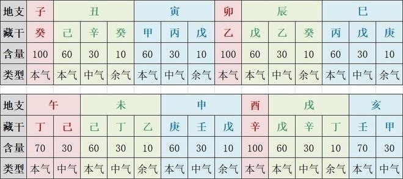
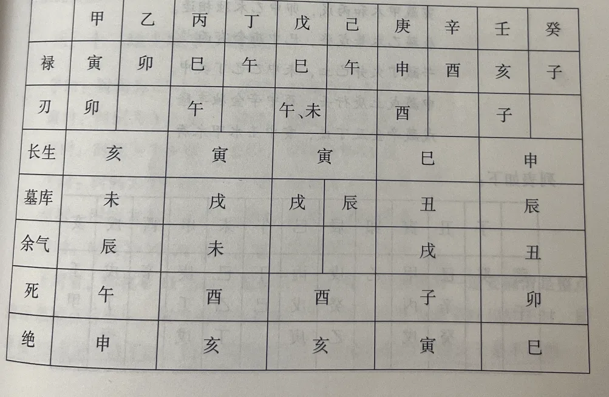
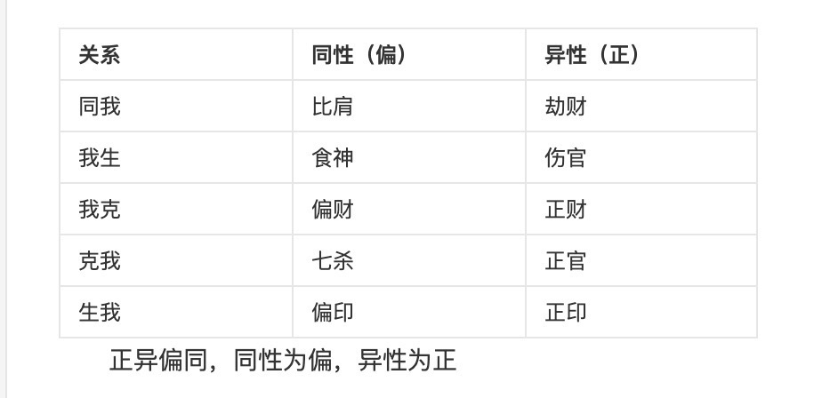

Ch 1: Getting Started — Your Birth Time Code
The foundation of BaZi chart reading: what the Four Pillars are, how the Five Elements interact, what the Ten Gods represent, and how to find the key that unlocks any chart.
1.1 What Is a BaZi Chart?
"BaZi" literally means "Eight Characters." It refers to the eight symbols that represent your exact moment of birth — year, month, day, and hour, each expressed as two characters: a Heavenly Stem（天干，top）and an Earthly Branch（地支，bottom）. Think of it as a time-stamp written in an ancient coding system.
The Ten Heavenly Stems（天干）: Jia（甲）, Yi（乙）, Bing（丙）, Ding（丁）, Wu（戊）, Ji（己）, Geng（庚）, Xin（辛）, Ren（壬）, Gui（癸）. These are ten distinct energy types, like ten different frequencies of light.
The Twelve Earthly Branches（地支）: Zi（子）, Chou（丑）, Yin（寅）, Mao（卯）, Chen（辰）, Si（巳）, Wu（午）, Wei（未）, Shen（申）, You（酉）, Xu（戌）, Hai（亥）. Each corresponds to one of the twelve Chinese Zodiac animals, and each contains hidden elemental energies (called "hidden stems"（藏干）).
These stems and branches combine in a fixed sequence to form sixty unique pairs — known as the Sixty Jiazi Cycle（六十甲子）. This cycle repeats every 60 years, which is why your 60th birthday is traditionally a major milestone in Chinese culture.
Example: Someone born on May 20, 2000, at 3 PM would have these four pillars:
| Pillar | Stem | Branch | Meaning |
|---|---|---|---|
| Year | Geng | Chen (Dragon) | Year of birth |
| Month | Xin | Si (Snake) | Seasonal context |
| Day | Wu | Yin (Tiger) | Your core self |
| Hour | Geng | Shen (Monkey) | Time-specific details |
Months and hours follow fixed branch assignments: The first lunar month always falls on Yin (Tiger), the second on Mao (Rabbit), and so on. Hours are counted in 2-hour blocks — 11 PM to 1 AM is Zi, 1 AM to 3 AM is Chou, and so forth. This is based on the solar calendar, not the lunar calendar.
| Month | Branch | Solar Period | Hour | Branch | Time |
|---|---|---|---|---|---|
| 1st Month | Yin（寅） | Start of Spring（立春） | Zi Hour | Zi（子） | 23:00 – 01:00 |
| 2nd Month | Mao（卯） | Start of Awakening（惊蛰） | Chou Hour | Chou（丑） | 01:00 – 03:00 |
| 3rd Month | Chen（辰） | Clear & Bright（清明） | Yin Hour | Yin（寅） | 03:00 – 05:00 |
| 4th Month | Si（巳） | Start of Summer（立夏） | Mao Hour | Mao（卯） | 05:00 – 07:00 |
| 5th Month | Wu（午） | Grain in Ear（芒种） | Chen Hour | Chen（辰） | 07:00 – 09:00 |
| 6th Month | Wei（未） | Slight Heat（小暑） | Si Hour | Si（巳） | 09:00 – 11:00 |
| 7th Month | Shen（申） | Start of Autumn（立秋） | Wu Hour | Wu（午） | 11:00 – 13:00 |
| 8th Month | You（酉） | White Dew（白露） | Wei Hour | Wei（未） | 13:00 – 15:00 |
| 9th Month | Xu（戌） | Cold Dew（寒露） | Shen Hour | Shen（申） | 15:00 – 17:00 |
| 10th Month | Hai（亥） | Start of Winter（立冬） | You Hour | You（酉） | 17:00 – 19:00 |
| 11th Month | Zi（子） | Major Snow（大雪） | Xu Hour | Xu（戌） | 19:00 – 21:00 |
| 12th Month | Chou（丑） | Slight Cold（小寒） | Hai Hour | Hai（亥） | 21:00 – 23:00 |
The Hidden Stems（藏干） inside each branch are essential knowledge — memorize them. Each Earthly Branch contains one, two, or three hidden Heavenly Stems, and these hidden elements play a major role in chart analysis.
| Branch | Zodiac | Main Qi（本气） | Middle Qi（中气） | Residual Qi（余气） | Element |
|---|---|---|---|---|---|
| Zi（子） | Rat | Gui（癸） | — | — | Water |
| Chou（丑） | Ox | Ji（己） | Gui（癸） | Xin（辛） | Earth |
| Yin（寅） | Tiger | Jia（甲） | Bing（丙） | Wu（戊） | Wood |
| Mao（卯） | Rabbit | Yi（乙） | — | — | Wood |
| Chen（辰） | Dragon | Wu（戊） | Yi（乙） | Gui（癸） | Earth |
| Si（巳） | Snake | Bing（丙） | Wu（戊） | Geng（庚） | Fire |
| Wu（午） | Horse | Ding（丁） | Ji（己） | — | Fire |
| Wei（未） | Goat | Ji（己） | Ding（丁） | Yi（乙） | Earth |
| Shen（申） | Monkey | Geng（庚） | Ren（壬） | Wu（戊） | Metal |
| You（酉） | Rooster | Xin（辛） | — | — | Metal |
| Xu（戌） | Dog | Wu（戊） | Xin（辛） | Ding（丁） | Earth |
| Hai（亥） | Pig | Ren（壬） | Jia（甲） | — | Water |
1.2 The Five Elements（Wu Xing 五行）
The Five Elements — Wood, Fire, Earth, Metal, Water — are the fundamental forces that flow through every BaZi chart. They interact through two basic dynamics:
Generation Cycle（相生, who feeds whom）: Wood feeds Fire → Fire creates Earth (ash) → Earth yields Metal (ore) → Metal produces Water (condensation) → Water nourishes Wood. Like a circle of support, each element nourishes the next.
Control Cycle（相克, who restrains whom）: Wood parts Earth (roots break soil) → Earth dams Water (banks hold rivers) → Water extinguishes Fire → Fire melts Metal → Metal cuts Wood (axes fell trees). This is the system of checks and balances.
But these are just the basics. In practice, there are nuances: reverse control (when Wood is so abundant it overwhelms Metal instead of being cut) and failed generation (when Wood is so plentiful that Fire can't consume it all). These deeper dynamics will come up in real chart readings. Want to see which elements dominate your own chart? Try the Five Elements Personality Test.
Seasonal strength matters: Each element has a different level of vitality depending on the season. In summer, Fire is at peak strength, Earth is supportive, Wood is resting, Water is imprisoned, and Metal is at its weakest. This seasonal vitality is one of the factors used to assess whether your chart is "strong" or "weak."
For a deeper exploration of Five Elements theory and its applications, see: "Five Elements Theory (Wu Xing) — The Complete Guide" →
1.3 The Twelve Life Stages（Chang Sheng 长生十二宫）
There are currently two points of debate regarding the Twelve Life Stages.
a. Yin and Yang share the same birth and death（阴阳同生共死）
b. Yang is born where Yin dies, Yin is born where Yang dies（阳生阴死，阴生阳死）
The author tends to agree with the first view. There has been considerable controversy since ancient times, so it is worth explaining why the author favors "shared birth and death" — though there are also some points of personal doubt. Below are the commonly used states under the shared-birth-and-death framework:
Birth（长生）, Official/Lu（临官/禄）, Peak/Ren（帝旺/刃）, Tomb（墓）, Death（死）, Extinction（绝）
| Stem | Element | Official / Lu（禄） | Blade / Ren（刃） | Birth / Chang Sheng（长生） | Tomb / Mu（墓） | Residual（余气） | Death（死） | Extinction（绝） |
|---|---|---|---|---|---|---|---|---|
| Jia（甲） | Wood | Yin（寅） | Mao（卯） | Hai（亥） | Wei（未） | Chen（辰） | Wu（午） | Shen（申） |
| Yi（乙） | Wood | Mao（卯） | — | Hai（亥） | Wei（未） | Chen（辰） | Wu（午） | Shen（申） |
| Bing（丙） | Fire | Si（巳） | Wu（午） | Yin（寅） | Xu（戌） | Wei（未） | You（酉） | Hai（亥） |
| Ding（丁） | Fire | Wu（午） | — | Yin（寅） | Xu（戌） | Wei（未） | You（酉） | Hai（亥） |
| Wu（戊） | Earth | Si（巳） | Wu·Wei（午·未） | Yin（寅） | Chen（辰） | — | You（酉） | Hai（亥） |
| Ji（己） | Earth | Wu（午） | — | Yin（寅） | Chen（辰） | Xu（戌） | Zi（子） | Yin（寅） |
| Geng（庚） | Metal | Shen（申） | You（酉） | Si（巳） | Chou（丑） | — | Zi（子） | Yin（寅） |
| Xin（辛） | Metal | You（酉） | — | Si（巳） | Chou（丑） | Xu（戌） | Wu（午） | Mao（卯） |
| Ren（壬） | Water | Hai（亥） | Zi（子） | Shen（申） | Chen（辰） | — | Wu（午） | Si（巳） |
| Gui（癸） | Water | Zi（子） | — | Shen（申） | Chen（辰） | Chou（丑） | Wu（午） | Mao（卯） |
The author's personal doubt mainly concerns the Birth（长生）state. Below is the analysis. First, we need to clarify two points:
a. Heavenly Stems represent the tangible; Earthly Branches represent the atmosphere（天干主实，地支主气）
b. Numerology at its core imitates the laws of Heaven — that is, the laws of nature. Since it imitates natural laws, numerology can be applied to anything that conforms to the way of nature（命理学本质是模仿天道规律，也可以说是模仿大自然规律）
With these two points in mind, let's look at the differences in the Birth stage among the Ten Heavenly Stems.
Wood (Jia, Yi) is born in Hai（亥）:
Since the Stems represent tangible form, we can work with imagery. Jia is born in Hai — the great tree enters dormancy in early winter, but Ren Water nourishes its roots and sustains its strength, hence Birth. But Yi is different — Yi can be likened to grass and flowers, which in early winter are certainly not as resilient as Jia Wood. Yi is essentially in a state of dormancy, so Yi does not necessarily have its Birth in Hai. However, if the chart is full of warm sunlight, then Yi too can be "born" here. Therefore, the view that Yi "dies" in Hai under the "Yang born, Yin dies" framework does have some merit.
Fire (Bing, Ding) is born in Yin（寅）:
Bing Fire being born in early spring is easy to understand, but Ding Fire is not so certain. Although Wood energy is strong in early spring, it is still a season of cold returning to warmth — a single snowstorm could extinguish it. Ding Fire can be likened to human fire; in cold and damp conditions it may not ignite at all. Mao（卯）would be slightly more favorable.
Earth (Wu, Ji) is born in Yin（寅）:
Fire and Earth share the same palace, and the logic here is similar. Wu Earth is like mountain earth — receiving early spring's Bing Fire, it brims with vitality. Ji Earth is garden soil — receiving Bing Fire, it becomes vibrant. But when they encounter Ding Fire, they may be suspected of extinguishing it. Cold, damp earth receiving Ding Fire is welcome but not enough; Wu is somewhat better in this regard.
Metal (Geng, Xin) is born in Si（巳）:
Metal in early summer — warm but not blistering, gentle with a quality like warm, polished jade — hence Birth. But if Fire is excessive, Metal does not experience Birth; instead, it becomes brittle（脆金）.
Water (Ren, Gui) is born in Shen（申）:
Ren Water born in autumn — Metal generates the water source, and a great river's water is the perfect outlet for strong Metal's killing energy, flowing endlessly — hence Birth. But Gui Water is a clear spring; how can it drain the energy of stubborn Metal? Instead, Metal would muddy the Water. Unless the chart has abundant Water to dilute the Metal, Gui Water in Shen is not necessarily "born" — it depends on the situation.
Therefore, when reading the Favorable Element（用神）, always read the original chart first, then apply the Twelve Life Stages to determine favorable and unfavorable positions.
1.4 The Ten Gods（Shi Shen 十神）
The Ten Gods describe the relationships between the Day Master（日主，your core self） and every other element in your chart. Think of them as ten different roles that other people, events, and energies play in your life story.
The names (Resource, Output, Wealth, Power, Companion) are just labels for convenience — you could call them A, B, C, D, E and the system would work the same. The ancient practitioners named them descriptively to make them easier to remember and apply.
| Relationship | Same Polarity (Yang meets Yang) | Opposite Polarity (Yang meets Yin) |
|---|---|---|
| Element that produces you | Indirect Resource (偏印) | Direct Resource (正印) |
| Same element as you | Friend (比肩) | Rob Wealth (劫财) |
| Element you produce | Eating God (食神) | Hurting Officer (伤官) |
| Element you control | Indirect Wealth (偏财) | Direct Wealth (正财) |
| Element that controls you | Seven Killings (七杀) | Direct Officer (正官) |
1.5 Reading the Ten Gods — Real-Life Meanings
Each Ten God has a "symbolic range" — a set of real-life associations that experienced readers use to interpret charts. These associations differ slightly for men and women, but here are the core meanings:
| Ten God | Represents |
|---|---|
| Resource (印) | Parents, elders, mentors, education, authority, documentation, nurturing, shelter |
| Power (官杀) | Fathers, children (for women), bosses, leaders, discipline, government, illness, authority figures |
| Wealth (财) | Father, wife (for men), subordinates, money, material possessions, results |
| Companion (比劫) | Siblings, friends, partners, colleagues, competition, physical labor, limbs |
| Output (食伤) | Skills, talent, creative expression, children (for men), students, joy, leisure, reputation, mother (for men) |
1.6 Branch Interactions — Combine（合）, Clash（冲）, Harm（害/穿）, Punish（刑）, Break（破）
The Earthly Branches in your chart don't just sit there — they actively interact with each other. These interactions are what make chart reading dynamic rather than static. Here are the major types:
1.6.1 Heavenly Stem Combinations（天干合） (Stem-to-Stem)
Five pairs of stems combine: Jia-Ji, Yi-Geng, Bing-Xin, Ding-Ren, Wu-Gui. When your Day Master combines with another stem, it shows what you're drawn toward — combining with Wealth means you chase money; combining with Power means you're drawn to authority. Combining with Jia or Bing (when they represent Power) often indicates a career in government or public service.
1.6.2 Six Branch Combinations（地支六合） (Branch-to-Branch)
Six pairs of branches combine（合）: Zi-Chou, Mao-Xu, Si-Shen, Wu-Wei, Chen-You, Yin-Hai. These represent connections and "getting something under control." But the outcome depends on which element is stronger in the overall chart. For example, in a Si-Shen combination: if Fire dominates, Fire controls Metal (Shen); if Metal is strong, Metal controls Fire (Si).
1.6.3 Three-Branch Harmonies（三合局）
Four groups of three branches harmonize to form a pure element: Yin-Mao-Chen → Wood, Si-Wu-Wei → Fire, Shen-You-Xu → Metal, Hai-Zi-Chou → Water. These are powerful formations that can change the elemental balance of the entire chart. They're sometimes used to determine the chart pattern (Ge).
1.6.4 Three-Branch Meetings（三会局, Hui Ju）
Similar to harmonies but even stronger: Yin-Mao-Chen (center on Mao), Si-Wu-Wei (center on Wu), Shen-You-Xu (center on You), Hai-Zi-Chou (center on Zi). These are like elemental super-charges — when all three branches are present, the central branch's energy dominates.
1.6.5 Stem-Branch Self-Combinations（干支自合）
Nine groups where a Heavenly Stem combines with its own Earthly Branch. The most significant are: Wu-Zi, Gui-Si, Ren-Wu, Xin-Si, Ding-Hai — where the stem combines with the branch's primary hidden stem. These often indicate the chart owner's deep-seated ambitions.
1.6.6 Punishments（Xing 刑）
Three main punishments（刑）: Yin-Shen-Si (ungrateful/无恩), Chou-Wei-Xu (bullying/恃势), Zi-Mao (rude/无礼). Plus self-punishment (e.g., You-You, Hai-Hai). Punishments primarily indicate harm or damage — but only when all three branches of a punishment are present. Two branches in a punishment relationship usually mean "gaining control" rather than harm.
1.6.7 Clashes（Chong 冲）
Six pairs: Zi-Wu, Mao-You, Chou-Wei, Si-Hai, Chen-Xu, Yin-Shen. Clashes are direct confrontations — the most obvious form of conflict in a chart. Think of them as the same polarity's mortal enemies: not just repelling each other but actively fighting. They can cause separation, sudden change, or physical relocation — but also "activation" (stirring dormant energy into motion).
1.6.8 Harms（Hai 害/穿）
Six pairs: Zi-Wei, You-Xu, Chou-Wu, Mao-Chen, Shen-Hai, Yin-Si. Harms are like concentrated spear thrusts — the Four Pure branches (Zi, Wu, Mao, You) "pierce" the Four Tombs（四墓库：Chen, Xu, Chou, Wei）. It's a fight to the finish: either the spear breaks through or the shield holds. Harms represent ruthless, sometimes cruel damage — but also the gaining of control.
1.6.9 Breaks（Po 破）
Three pairs: Zi-Mao, Mao-Wu, You-Wu. Breaks represent minor friction — small-scale damage, like getting a scrape rather than a serious wound. They're the weakest of the negative branch interactions.
Understanding the pattern: Breaks, Clashes, and Harms form a hierarchy. Breaks = small friction between same-nature elements. Clashes = full-scale war between mortal enemies. Harms = a concentrated strike where only one side survives. Think of Breaks as a sibling argument, Clashes as a bar fight, and Harms as a sniper shot.
1.7 The Nature of Each Heavenly Stem
Each Heavenly Stem has a distinct personality — like ten different characters in a play. Understanding these personalities helps you "see" the chart as a living story rather than an abstract diagram.
| Stem | Image | Personality | Body Association | With Fire → | With Water → |
|---|---|---|---|---|---|
| Jia (甲) | Great tree, pillar | Noble, upright, leader | Head, torso, liver | Culture, education | — |
| Yi (乙) | Vine, silk, flower | Gentle, beautiful, adaptable | Liver, nerves | Culture, art | Medical aesthetics |
| Bing (丙) | The Sun | Generous, magnanimous, warm | — | — | Media, performing arts |
| Ding (丁) | Candle flame, torch | Mysterious, wise, inspired | Heart, nerves | Literature, scholarship | — |
| Wu (戊) | Mountain, fortress, wall | Loyal, honest, steadfast | Stomach, spleen | Teaching career | — |
| Ji (己) | Garden soil, farmland | Cautious, nurturing, sincere | Stomach, skin | — | — |
| Geng (庚) | Raw metal, steel, axe | Fierce, resolute, unyielding | Lungs, skin | — | Great with Water: polished success |
| Xin (辛) | Jewelry, jade, arrowhead | Refined, precise, elegant | Lungs, skin | — | With Gui + Pure Branches = exquisite beauty |
| Ren (壬) | Great river, ocean | Strategic, restless, intellectual | Kidneys | — | Finance careers when as Output |
| Gui (癸) | Clear spring, mist, dew | Intuitive, mysterious, attractive | Eyes, kidneys | — | Naturally beautiful; weak/damaged → eye issues |
1.8 The Four Tombs（Si Mu Ku 四墓库）
The Four Tombs（四墓库）are Chen（辰）, Xu（戌）, Chou（丑）, and Wei（未）. They serve as the "storage vaults" for the three hidden stems within each Earthly Branch.
The Four Tombs — Chen, Xu, Chou, Wei — are the storage vaults of the BaZi system. Think of them as warehouses: when they're useful (storing something your chart needs), they bring wealth and status. When they're useless, they function more like actual tombs — burying things you need.
| Tomb | Type | Stores | Opens with | Closes with | Special Traits |
|---|---|---|---|---|---|
| Chen (辰) | Yang, Damp | Water | Xu | You | Weakly supports Earth; nourishes Metal; strongly dims Fire |
| Xu (戌) | Yang, Dry | Fire | Chen | Mao | Strongly supports Earth; does NOT produce Metal (may brittle it) |
| Chou (丑) | Yin, Frozen | Metal | Wei | Zi | Barely supports Earth; amplifies Water; "unseen wealth" if as Wealth star |
| Wei (未) | Yin, Dry | Wood | Chou | Wu | Strongly supports Earth; may NOT produce Metal in scorching charts |
Opening and closing the tomb（开库/闭库）: When a tomb clashes with its opposite (e.g., Chen meets Xu), it "opens" — releasing whatever is stored inside. Whether this is good or bad depends on what's inside and whether your chart needs it. Example: if your Wealth is stored in Chen and Xu arrives, your wealth vault opens — great if you need money, terrible if Wealth is your unfavorable element.
Entering the tomb（入墓, Ru Mu）: When a Luck Cycle brings a tomb branch, the corresponding elements in your natal chart may "enter the tomb" — their influence is suppressed. This is generally dangerous for Output (creativity/talent) and family stars. Whether it's auspicious or inauspicious depends on whether the buried element is favorable or unfavorable.
1.9 The Si (Snake) — A Special Branch
The Earthly Branch Si (Snake) is unique — it behaves like a chameleon, especially around Metal. When Fire is dominant, Si behaves as Fire and controls Metal. But when Metal is strong, Si can "switch sides" and act as Metal's Birth stage (since Fire and Earth share the same palace). Always weigh the relative strengths before deciding which side Si takes in any chart.
1.10 Spotting Scams — Red Flags（常见骗术） in Real Readings
Here are the telltale signs of an inexperienced or dishonest practitioner:
- Vague, generic statements with no specifics. A skilled reader should be able to pinpoint the year something significant happened — not just "you had some challenges in your thirties."
- Relying entirely on Spirit Stars (Shen Sha). Someone who sees "Yin-Yang Error"（阴差阳错） and immediately declares a bad marriage, or spots "Noble Helper" and predicts great wealth, is cutting corners. Spirit Stars are supplementary at best.
- Not verifying the chart with past events first. A responsible reader always "reads the past" before predicting the future — both to validate the chart's accuracy and to demonstrate credibility. If someone jumps straight to predictions without confirming any past events, be cautious.
1.11 Strong or Weak: Does It Matter?
The short answer: yes, but it's not the most important thing. Many beginners get obsessed with determining whether the Day Master is "strong" or "weak" — but this alone tells you very little about someone's life.
A strong Day Master（身强）doesn't guarantee wealth or good health. A weak Day Master（身弱）doesn't guarantee poverty or illness. Strength and weakness describe the climate of your chart, not your destiny.
The three indicators of strength:
- In Season (De Ling 得令): The Month Branch contains the same element as your Day Master — like a plant growing in its native season.
- Has Roots (De Di 得地): The Earthly Branches contain your Day Master's element — like a tree with deep roots.
- Has Support (De Shi 得势): The Heavenly Stems contain elements that produce or mirror your Day Master — like having a team backing you up.
Even when all three are present, you must compare against the overall chart to determine true strength — and check whether your roots or resources have been damaged.
Think BaZi is just superstition? Our skeptic-friendly article addresses common objections: "Is BaZi Real? A Skeptic's Guide to Four Pillars of Destiny" →
1.12 Chart Patterns（Ge Ju 格局）
Chart patterns are determined primarily from the Month Branch. The standard Eight Patterns are: Officer Pattern, Resource Pattern, Wealth Pattern, Output Pattern — plus the Lu (Prosperity) Pattern, Blade Pattern, Mixed-Qi Pattern, and Extreme patterns like Following Patterns（从格）.
Important: Having a "pattern" doesn't automatically mean good fortune, and not having one doesn't mean bad fortune. Everything depends on the overall combination of elements. As the old saying goes: "True teachings are one sentence; false teachings fill ten thousand books." In practice, most people's charts don't form a clean pattern — the conditions are quite strict. Don't worry about it.
Some practitioners consider Following Patterns (Cong Ge) especially auspicious, but these have obvious flaws: when the chart is good, it's very good; when it turns bad, it's very bad. The conditions for identifying a Following Pattern are also notoriously difficult to judge.
1.13 Finding Your Favorable Element（Xi Yong Shen 喜用神）
What is the Favorable Element?
Think of your chart as a room. If the room is too hot, you need air conditioning. If it's too cold, you need a heater. The Favorable Element is whatever brings your chart's "room" closer to a comfortable temperature — not necessarily the element that's most lacking, but the one that creates the most harmony. You can also look up your Favorable Element using our dedicated guide →
A counterintuitive example: If your chart has excessive Fire, many beginners assume you need Water to cool it down. But Water and Fire in direct conflict create steam and chaos — they fight each other. The real solution might be Damp Earth (Chen, Chou), which gently absorbs the Fire's heat without triggering a war. This is why understanding the Favorable Element requires more than just counting elements.
A quick intuitive test: What colors are you naturally drawn to? What environments make you feel most alive? Your instincts often point toward your Favorable Element — just translate the feeling into its corresponding Five Element.
Key Terms
- Yong Shen（用神, Useful God）: The primary tool your chart needs — like reaching for a hammer when you need to drive a nail. If you're weak and need support, Resource is your Yong Shen.
- Xi Shen（喜神, Joy God）: The element that protects your Yong Shen. If your Yong Shen is Resource, then Wood (which produces Resource) would be your Xi Shen.
- Ji Shen（忌神, Forbidden God）: The element that harms you — your Yong Shen's enemy. If you need Resource but Wealth appears, Wealth attacks Resource, making it your Ji Shen.
- Xian Shen（闲神, Idle God）: An element that neither helps nor harms — neutral. But "idle" elements can transform into favorable or unfavorable ones depending on the Luck Cycle.
How to Find Your Favorable Element — Step by Step
- Identify the imbalance. Which element is dominant? Which is lacking? Start with the obvious — like noticing that a room is too hot or too cold.
- Find what restores balance. This isn't always the missing element. Sometimes you need a "bridge" element that mediates between conflicting forces, or a "drain" element that channels excess energy productively.
- Verify with the whole chart. The Favorable Element must work in context — it shouldn't create new problems while solving existing ones.
| Year | Month | Day | Hour |
|---|---|---|---|
| Gui (癸) | Bing (丙) | Bing (丙) | Jia (甲) |
| Mao (卯) | Chen (辰) | Wu (午) | Wu (午) |
A Beginner's Framework for Reading Any Chart
The traditional approach (start with strength/weakness, then patterns, then Ten Gods) is solid theory — the "Dao" (principle). But for practical results, the author recommends a different starting point:
- What does the Day Master want to do? Look at what your Day Master is actively reaching for — combining with Wealth, combining with Power, controlling something. If there's a clear "goal" in the chart, that's the primary storyline. If the Day Master shows no clear ambition, look to the Day Branch instead (combinations, clashes, piercings on the Day Branch often reveal the person's actual path).
- Is there a faction war? If no clear individual ambition, look for elemental factions — Wood-Fire vs. Metal-Water, Fire-Dry-Earth vs. Water-Damp-Earth. When one faction clearly dominates another, it indicates significant achievement (controlling Power = gaining authority; controlling Wealth = gaining money). The danger is "reversal" — when a Luck Cycle brings the opposing faction and flips the balance.
- Read the imagery（Xiang Fa 象法）. If neither of the above applies, read the chart as a picture. The most refined method — and the hardest to master. What image does the chart present? A peaceful landscape or a battlefield? Every element contributing to a harmonious picture = high achievement. Disconnected, warring elements = lower achievement.
- Ambiguous charts. If none of the above methods yield a clear picture, the chart likely belongs to someone who works with their hands for a living. Not a negative judgment — just a realistic assessment of the chart's capacity.
第1章：入門必讀
天有不測風雲，人有旦夕禍福。蜈蚣百足，行不及蛇；雄雞兩翼，飛不過鴉。馬有千里之程,無騎不能自往；人有沖天之志，非運不能自通。所以說萬般皆是命，半點不由人。
但也不要忽略了客觀因素，而我們要講"盡人事，聽天命"，在自己竭盡全力後，纔可講順其自然聽天由命，天地人三者纔是命運之根本，希望同好者們切記！否則恐陷於宿命論中，就算結果失敗但體驗過程也何嘗不失爲另一種成功。
1.基本知識點
1.1 什麼是八字？
"八字"也叫"生辰八字"，是指一個人出生時的年、月、日、時所對應的天干地支。天干有十個，分別是甲、乙、丙、丁、戊、己、庚、辛、壬、癸；地支有十二個，分別是子、醜、寅、卯、辰、巳、午、未、申、酉、戌、亥。天干和地支按照一定的順序組合起來，形成六十個不同的組合，這就是"六十甲子"。
八字就像你出生時的"時間密碼"，用中國傳統的方式記錄你來到世界的時刻。
舉個例子：假設你出生在2000年5月20日下午3點，古人會把這個時間轉換成特殊的計時符號：
年：庚辰（龍年）
月：辛巳（農曆四月）
日：戊寅
時：庚申
這四個時間單位各有兩個字（天干+地支），合起來就是八個字，所以叫"八字"。
在中國傳統文化中，人們認爲這八字可以反映出一個人的命運、性格、健康等諸多方面的信息，甚至可以通過對八字的分析來預測未來的一些事情，這就是所謂的"算命""看八字"等說法。
十二生肖對應十二個地支：
子鼠，丑牛，寅虎，卯兔，辰龍，巳蛇，午馬，未羊，申猴，酉雞，戌狗，亥豬
月份和時辰對應圖：
也就是正月必寅，二月必卯以此類推...（說的是太陽曆）；時辰：2個小時爲一個時辰，也就是23-1爲子時，1-3爲丑時以此類推...
十二個地支藏幹：
比較重要，死記硬背即可。

1.2 .五行
木火土金水。
生：木生火，火生土，土生金，金生水，水生木循環往復；
克：木克土，土克水，水克火，火克金，金克木。
當然這只是基本概念，除了這些基本的生克概念，還需要知道反克、不生之道理。比如木多反克金，木多火少反不生火等等，這些深一點的概念後在討論。
同時五行在每個季節的狀態也是不一樣的，旺相休囚死，比如夏季，火旺 土相 木休 水囚 金死，這個也是判斷身強身弱的一個點。當然還有長生十二宮的概念，比較複雜，一般只掌握長生，祿，刃，死，墓，絕這幾個就行。
想深入了解五行理論及其應用？閱讀：「五行理論（Wu Xing）— 完整指南」→
1.3.長生十二宮
現在長生十二宮目前存在兩種爭議。
a.陰陽同生共死
b.陽生陰死，陰生陽死
我個人比較認同第一個觀點，自古以來爭議比較大所以還是的說說爲什麼傾向於認同陰陽同生共死，但裏面也有一些個人覺得存疑的地方，下面下看看陰陽同生死的幾個常用狀態。
即：長生，臨官（祿），帝旺（刃），墓，死，絕

但存疑的點我個人認爲主要是長生狀態，下面是我的分析。首先我們需要明確兩個觀點：
a：天干主實，地支主氣
b：命理學本質是模仿天道規律，也可以說是模仿大自然規律，既然是模仿規律，那麼命理學就可以套用在任何符合於天道（也就是大自然）的事或者物
明白了這兩點我們再來看十天干的長生有何不同。
甲乙木長生於亥：
首先天干爲實可進行取象，甲長生於亥，甲木初入冬而眠，但壬水可甲木滋潤根鬚存續力量所以長生，乙木則不一定，乙木可取花草之象，初冬之季肯定不如甲木那般還有能力存活，因此基本處於靜止狀態，所以乙木不一定長生在亥，但是如果全局暖陽高照那麼也長生。所以反過來按照陽生陰死，陰生陽死的觀點說乙木絕於亥還是有一定道理的
丙丁火長生於寅：
長生：依然先取象。丙火長生在初春之際好理解，但丁火不一定，雖木氣旺相但咋暖還寒之季，隨便一場風雪就可滅之，丁火可取人間之火，其次寒溼交加不一定生得起丁火，卯木稍好點。
戊己土長生於寅：
火土同宮這裏同理，戊土高山之土初春得丙生機盎然，己土田園之土得丙活力煥發，但他們見丁火則恐有熄丁火之嫌疑，因寒溼之土見丁火雖喜但不夠，戊土稍好。
庚辛金長生於巳：
金處於初夏之季，溫而暖，熱而不燥，有溫潤如玉之象，固長生，但火多不長生，反有脆金之嫌。
壬癸水長生於申：
壬水生於秋，金髮水源，大河之水泄強金肅殺之氣再合適不過，源源不斷故而長生；那麼癸水一汪清泉如何泄的了頑金之氣，反有金混水濁之象，除非局中水多則可泄頑金之氣，所以癸水於申不一定長生，要分情況。
所以看用神要先要先看原局，再看十二長生來定喜忌。
1.4.十神的概念
需死記硬背。即：財、官、印、比劫，這些本質上並沒有特殊的意義，你也可以用abc任意稱呼代替，古人之所以如此命名也只是爲了方便記憶和理解解讀，最後再給十神賦予相對應的含義，十神有了含義八字就可以解讀了。

1.5.十神的取象
正偏印（梟神）：父母親、長輩、領導、文化、地位、權印、工作單位等
正偏官（七殺）：父親、女兒、兒子、領導、師長、權利、疾病、權利、官匪、政府機構等
正偏財：父親、妻子、妾、女人、下屬、財物等
比劫：兄弟姊妹、朋友、夥伴、同事、合作、競爭、幫助、手足、四肢、體力
食傷：功名利祿、技藝、精神追求、享受、兒子、女兒、學生、晚輩、口舌、母親、祖母、公婆等、休閒場所
男女取象不同，具體自行百度查看，這裏只做統計
1.6.刑衝合害破合的概念
首先分爲天干五合，地支六合和三合。
1.6.1.天干五合：天干一共 10 位兩兩相合，所以一共有 5 對相合，分別是：甲己合、乙庚合、丙辛合、丁壬合、戊癸合。
天干五合的意義：日主所合的可以代表日主所追求的東西，比如合財還是合官，一般合甲丙的日主比較能進體制，因爲甲丙首爲高貴之合。當然還有爭合的概念，一般代表競爭之意。
地支六合：地支一共 12 位兩兩相合，分別是：子醜合、卯戌合、巳申合、午未合、辰酉合、寅亥合
1.6.2.地支六合的意義：也能代表日主所追求的東西，也爲得到控制之意，但地支合的意義要多一些，其中巳申合看力量組合，局中火力量大時火剋制申反之申剋制巳；酉辰合主要是金產斷辰中之乙木多爲不利；寅亥合則代表水合傷寅中丙火也多爲不利
1.6.3.地支三合：寅卯辰合木、巳午未合火、申酉戌合金、亥子醜合水。
地支三合的意義：三合的主要作用在於看是化成了什麼象，比如地之的七殺化成了印等等以此來論吉凶，有時也用於取格來用，比如月令之藏幹本不透，但月令和年日支三合成殺，那麼日主可取七殺格。
1.6.5.還有地支三會局，寅卯辰三方會木局，中神在卯；巳午未三方會火局，中神在午；申酉戌三方會金局，中神在酉；亥子丑三方會水局，中神在子。同時還有半三合、拱合的概念。三會和三合的用法類似，但力量比之三合更雜一些。
1.6.6.干支自合：一共有9組干支自合，這裏只講戊子、癸巳、壬午、辛巳、丁亥四組，他們是天干合地支的本氣。干支自合有時也代表日主所追求的東西。
1.6.7.相刑：主要是地支相刑，寅申巳三刑、醜未戌三刑、子卯刑，還有自刑的概念，比如酉酉刑、亥亥刑...這裏不詳細介紹了，大家百度就知道，這裏主要是要講它們的作用和意義，只有知道作用和意義才能斷命。
相刑的意義：刑主代表傷害，也可代表得到。代表傷害時，需要三刑全齊還要看刑的是誰，一般兩兩相刑時主得到控制之意識
1.6.8.相沖：子午衝、卯酉衝、醜未衝、巳亥衝、辰戌衝、寅申衝相沖的意義：衝同樣可代表傷害和得到控制之意。衝起、衝動
1.6.9.相害：害在盲派中也叫穿。子未穿，酉戌穿，醜午穿，卯辰穿，申亥穿，寅巳穿。
相害的意義：穿的力量很大，一般代表無情傷害之意但同時也代表得到控制之意。合其衝神者相穿
1.6.10.相破：子卯破，卯午破，酉午破。同時子不生卯木，卯不生午火相破的意義：相破的力量較小，有時會代表身體上的一些小傷害。
關於相破，相沖，相穿的理解：
子卯破 卯午破 酉午破 子酉破 本質是四正之氣，又同爲陰性（根據大自然規律，同性相斥，異性相吸），所以相破中雖有五行的相生，但是誰也瞧不起誰且相互排斥，所以不相生。
相沖就好理解了，同性中的死敵，不僅相斥還要相戰，所以衝的厲害，但也衝的遠，其危害不及穿。
穿是指四正氣去穿四庫，四正氣把力量集中到一點像箭一樣發出去，不是庫被穿透就是箭被阻擋折斷（不是你死就是我亡）
1.7 .十天干取象
甲：甲爲天干之首，取象有公門貴氣之意，對應人體可代表頭，軀幹，肝膽，和火組合起來可代表文化之意。同地支寅木取象類似
乙：乙木可取紙張，藤條，經絡，肝膽之象，和火組合起來也可代表文化，同時主美麗的事物（比如：軟裝，衣服等）和水組合起來有醫美之象。和地之卯木同象
丙：丙爲太陽，一陽解三尺之冰，常用作調侯之神。取象有美麗、貴氣之意，體現在人性上表現爲正派、包容、大氣、威嚴。和壬水組合起來有水火交融之象，可從事傳媒、演員等職業
丁：丁火可取神祕、智慧、文化、玄學、文章、靈感，對應人體可代表心、神經。和火組合起來一般表示喜文學，爲用時表示學問高。和地支午火同象
戊：戊爲高山、城牆、高大的建築、講臺，對應人可代表脾胃，如果局中土多且溼則容易脾胃虛弱，也表爲人忠厚誠信。另外戊土獨透且爲食神則容易就老師職業
己：己爲田園之土，表人象爲謹慎、老實、誠信誠信。也主脾胃，另外還主皮膚，局中過溼容易患皮膚病和脾胃虛弱之症
庚：庚金爲頑石、鋼材、礦物、機器、金融、軍隊、手術之象，爲人剛強、固執、威武。和水火組合火煉水漂則容器有大成就，爲人象可代表肺，皮毛。和地支申同象
辛：辛金爲飾品之金，玉器、箭頭、金融、法律、靈動。爲人象可代表肺，皮毛。如天干再見癸水，地支取一二四正氣（子午卯酉）則必精緻美麗。和地支酉同象
壬：壬水爲江河、大海、湖泊、航運、水產、金融、數字，爲人象代表智謀、好動、腎。局中壬水爲食傷時，容易作財務相關的工作。和地支亥同象
癸：癸水爲池塘、溪水，爲人象代表智謀、玄學、眼睛。癸水日主一般都是天生麗質，因爲癸水清潤，另外癸水在局中過弱和受傷時，容易近視眼和有眼疾。和地支子同象
1.8 .四墓庫基本常識
庫的力量和存儲比較龐大豐富，相當於倉庫的概念，有用時則能富貴，無用時則以墓來看待。
辰：辰土爲陽，但辰中含水，所以又爲溼土，也稱爲水庫。另外晦火嚴重
見戌爲開庫，見酉爲閉庫，無論是開庫和閉庫的喜忌都需要根據原局的需要而來，比如戊土日主身旺，坐下辰土爲財庫，局中無財透出，見戌來衝辰則爲開財庫主大發，反之身太若財多在見戌衝之則主破財刑耗。另外雖爲土，但幫土力量小，也不怎麼生金但能潤金
戌：戌土爲陽，戌中含火，所以又稱燥土，也稱火庫。見辰開庫，見卯閉庫，用法和作用和以上類似。另外，戌土幫土力量大，不生金反而有脆金之嫌
醜：醜爲陰土，爲陰中至陰，也稱爲凍土，也稱金庫。見未開庫，見子閉庫，用法和作用和以上類似。另外，醜土幾乎不幫土，反而加劇水的力量。如果局中以醜土爲財則多爲見不得光的財。另外晦火尤爲嚴重
未：未爲陰土，但未中含火，爲燥土，也稱爲木庫。見醜開庫，見午閉庫，用法和作用和以上類似。另外，未土幫土力量大，特定條件下不生金，比如全局火焦土燥則不生金，反而脆金
同時還有入墓的概念，大運見到墓庫一般會讓地支相對應的五行入墓，比如大運見辰，如果地支有亥子醜則就會入墓，入墓的好壞要分情況來看，食傷一般不能入墓，入墓則壽難逃；相對應的六親星也不能入墓，入墓則不吉。
1.9.巳火特性
地支巳火特性比較特殊，它像變色龍一樣，尤其和金組合更爲明顯，金力量大時反從金，這是何故？因火土同宮。所以巳乃金之長生之地；火旺時反而又克金，所以地支見巳火和申金組合需仔細辨別各自力量大小。
覺得八字是迷信？我們的懷疑者友好文章回應了常見質疑：「八字是真的嗎？懷疑者指南」→
2.常見騙術以及防騙技巧
2.1 .話語沒有乾貨模糊不清，全部都是抽象解釋，基本可確定爲騙子無疑，好的命理師至少會斷到命主某年準確發什麼關鍵節點大事。
2.2.拿神煞斷命的，比如看家陰差陽錯就說婚姻不好，看到貴人多就說命中富貴等等。
2.3.不斷前事就開始看，斷前事一是爲了判斷盤的準確性，二是爲了告知命主有一定把握，不至於斷的很偏（雖說不能百分百全斷對，至少有一定把握）
3.八字強弱判斷
3.1.主要看得令、得勢、得地。很多人喜歡糾結身強身弱（旺衰），但這個不是看盤的關鍵點，身強也不代表身體好能掙錢大錢，身弱也不代表身體差一事無成，總結就是雖要看但不是重點。
得令：同日主五行就爲得令，比如壬水生於子月；
得地：地支多根氣或者多印生扶，比如甲木地支多見寅卯辰，亥子水；
得勢：天干多比劫或印行生扶起；比如甲木多見甲乙木或壬癸水；
當然，並不是說見了以上情況就一定是強，日元的強弱要看和命局中和誰比；另外還需要看日主額根氣或者印綬是否被壞等等情況。
4.八字取格
4.1.取格專從月令找，主要有正八格，官格、印格、財格、食傷格，還有祿刃格、雜氣格、專旺格，兩氣成象格等，當然除了這些還有一些比較特俗的格局，比如炎上格，潤下格....,當然不是說成格局就好，不成格局就不好，一句話凡事看組合，真傳一句話假傳萬卷書。另外，普通人八字多不成格，成格條件比較苛刻，所以不必糾結。
還有人專以從格爲美，但這類格局缺陷也很明顯，好時很好，差時也很差，並不值得推薦，並且從格的條件很難判斷。
5.找喜用神
5.1 什麼是喜用神？
"喜用神"是八字命理學中的一個概念，可以理解爲"對你命理有利的因素"。
想象一下，八字就像一個天平，每個人出生時的八字（年、月、日、時的天干地支組合）會形成一種力量的平衡。但很多時候，這種平衡可能會偏向某一邊，比如有的八字"火"太旺，或者"水"太弱。爲了調整這種不平衡，就需要一些東西來"幫忙"，讓整個八字更加和諧。這些"幫忙"的東西，就是"喜用神"。
舉個例子：假設一個人的八字中"火"特別旺，就像一個房間裏火堆燒得太旺了，讓人受不了。這時候，很多人覺得就需要"水"來澆一澆，讓火勢減弱一些，達到一個平衡的狀態，但恰恰相反，用水會激起火勢導致水火交戰反而有害，這個時候則需要用溼土來收斂火氣，如"辰土、醜土"。在這個例子中，"溼土"就是"喜用神"，因爲它能幫助調整八字中的不平衡，讓整個命理更加和諧。是不是很有意思，其實你只要把八字想像成一個環境就能大致判斷出你的喜用神。其實還有一點可以快速大概判斷出你的喜用神，例如天生喜歡什麼顏色，喜歡去什麼場景，那麼大概率這就是你的喜用神，你只需要把它們轉換成對應的五行即可。
爲什麼叫"喜用神"？
"用神"：可以理解爲我們在幹一件事情時所需要的工具，比如我們常說的"用財、用官、用印..."，我們求財但身弱，那麼就可以用印幫扶，這個時候印就是用神。
"喜神"：這個比較好理解，能護"用神"的就可以稱之爲"喜神"
除了喜用神，還有"忌神""閒神"的概念
"閒神"：在命局中沒有危害也沒有幫助命主的則可以成爲"閒神"，當然"閒神"也可以轉變成忌用神，這個後面詳細再討論。
"忌神"：和"喜神"相反，在局中起危害作用的便是"忌神"，比如身弱用印，但見財來破印，則財爲"忌神"
5.2 如何找出八字中的用神？
首先需要找出八字中的"不平衡"，八字中有五行：木、火、土、金、水。每個人八字裏的五行數量可能不一樣，有的多，有的少，當然這只是初學者的淺顯看法，先易後難。比如：如果八字裏"火"特別多，就像房間裏火太多，太熱了，對應上人的性格那就說明此人性急躁脾氣大。
然後判斷需要什麼來"平衡"，根據八字的不平衡情況，找出需要什麼來調整。比如：如果八字裏"火"太多過於燥熱，就需要調和一下，讓火勢趨於中和，這時來一點溼土泄一泄火氣就會平衡不少，那麼在對上人的性格則會急而不燥恰到好處。如果八字用木但"木"弱，就需要"水和木"來幫扶，讓它長得更好等等。
舉個例子：
5.3 新手如何看一個八字？
爲了讓初學者能快速上手實戰，這裏做了總結，拋開了傳統的方式看命，當然不管方法怎麼變，傳統方法始終是作爲理論支撐的關鍵，所以理論知識點必須掌握，這是道，看命方法只是術。目的是讓初學者能快速上手，擺脫旺衰強弱的泥潭，能準確斷出八字中相關的事情，所以旺衰雖要看但也僅僅只是其中很小一個點，所以不必糾結。
5.3.1.先看日主想做什麼？
入手一個命局首先看日主想要幹什麼，也就是想要什麼，無非是富貴名祿。怎麼得到呢？是合官還是化官，是合財還是克財，如果日主有明顯的求取之道，比如合財或者合官，那麼基本這就是日主的追求，至於能否得到還需全盤推敲。假如日主只是克財或者抗官殺則可以棄日支不看轉而看日支（除非日主一柱都沒有明確的做功，那樣基本可以斷定格局較低，食傷泄秀也算是做功，主貴）日支主要看合和制，這裏的制主要是衝、穿、墓（制）手段爲主，這樣效率比較高能代表日主相關的事情。
5.3.2.局中有無黨勢？
如果以上都不具備，那麼還可以看黨勢，意思就是日主統領或者跟隨一方勢力去制服另一方勢力以此來獲得功名利祿，比如制官、財、食傷、比劫、印都可以。黨勢主要有木火黨、火土黨、金水黨、水溼土黨、火燥土黨，一般一黨具有強大的力量制了敵方勢力那麼成就就會比較大（前提是敵黨不能過於弱小），也就有了制官得官，制財得財，制了食傷也當財看的說法，當然這樣的局比較怕反局，也就是行大運流年是來了敵黨導致雙方勢力持平或者敵方勢大，那麼這種局面就稱爲反局，日主不是破財刑傷就是牢獄之災。
5.3.3.看象
如果也不具備黨勢那麼還可以看象，象法難度比較大但精準，是命理師不斷專研學習的必經之路。象法有十神象、合象、共象、帶象、換象、宮位象等。比如慈禧八字
慈禧八字：乙未 | 丁亥 | 乙丑 | 己卯
全局八個字皆有用，無一字浪費和搞破壞不和諧，所以能掌皇權。如果是財則必是首富
乙坐醜庫，醜爲金庫，也就是日主的七殺庫，七殺主權利也主男人，在看丁、己皆從未中出，未爲日主託根之地，且亥卯未三匯木局中神在卯，卯在時支也表示在家中，所有力量都匯聚於日主，掌控了卯就等於掌控了全局，由此看來全局七個字皆爲日主所用，普天之下莫非王土？所以能管得了皇帝。所以此局就是運用了十神象，換象，合象的概念來斷，根本沒用旺衰之理和干支的生剋制化以及刑衝破害來看，這就是象法的精妙和精準之處。
5.3.4.做功不明
如果一個八字日主既看不出想做啥，也沒有黨勢，又取象不明全憑生克去做功，那基本可以斷定此人格局不高，體力從業者。當然還有一些八字做功比較雜，那麼就要一一甄別找出主線，一般這類人事業比較雜，比如先上班然後再創業，甚至先進體後經商等等。